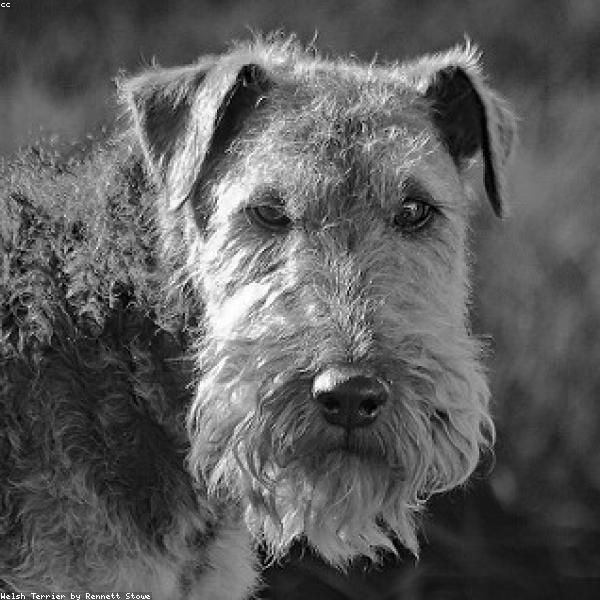

Dogs are Amazing

The true faith discovered was When painted panel, statuary, Glass-mosaic, window-glass, Amended what was told awry By some peasant gospeler.
— William Butler Yeats

As we read the school reports on our children, we realize a sense of relief, that can rise to delight, that, thank Heaven, nobody is reporting in this fashion on us.
— John Boynton Priestley

Television has proved that people will look at anything rather than each other.
— Ann Landers

Get money, still get money, boy, no matter by what means.
— Ben Jonson

No man but a blockhead ever wrote except for money.
— Samuel Johnson

Every great and commanding movement in the annals of the world is the triumph of enthusiasm. Nothing great was ever achieved without it.
— Ralph Waldo Emerson

People can be more forgiving than you can imagine. But you have to forgive yourself. Let go of what's bitter and move on.
— Bill William Henry Cosby

Honor's a thing too subtle for wisdom; if honor lie in eating, he's right honorable.
— Francis Beaumont

BEHAVIOR, n. Conduct, as determined, not by principle, but by breeding.
— Ambrose Gwinett Bierce

I tell you that as long as I can conceive something better than myself I cannot be easy unless I am striving to bring it in to existence or clearing the way for it.
— George Bernard Shaw